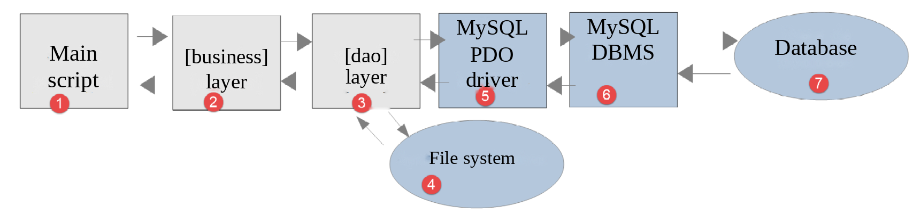

14. Übung zur Anwendung – Version 6
Wir haben soeben die folgende Schichtenstruktur implementiert:

Als DBMS wurde in den Beispielen MySQL verwendet. Im vorherigen Kapitel haben wir festgestellt, dass in den Klassen, die die Schicht [dao] implementieren, nichts auf ein bestimmtes DBMS hindeutete. Das überprüfen wir nun mit einem anderen DBMS, nämlich PostgreSQL. Die Schichtenarchitektur sieht dann wie folgt aus:

Version 6 enthält keine neuen Klassen: Sie verwendet die Klassen aus Version 5. Sie enthält nur Datendateien und neue Hauptskripte:
14.1. Installation des DBMS PostgreSQL
Der PHP-7-Kurs lud das PostgreSQL-Installationsprogramm für Windows von der Website https://www.postgresql.org/download/ herunter, führte es aus und stellte dann den Windows-Dienst von PostgreSQL – der beim Systemstart automatisch gestartet wurde – auf manuellen Start um. Mit [Laragon] ist es einfacher. PostgreSQL ist standardmäßig nicht installiert, aber [Laragon] kann es selbst hinzufügen:
- Klicken Sie mit der rechten Maustaste in das Fenster von [Laragon] (oder auf sein Symbol in der Taskleiste), um sein Menü zu öffnen;
- Wählen Sie [Tools > Quick add]. Die Liste zeigt Software, die [Laragon] herunterladen und installieren kann, darunter eine oder mehrere Versionen von PostgreSQL, etwa [postgresql-17];
- Ein Klick auf die gewünschte Version startet Download und Installation. PostgreSQL wird im Ordner [<laragon>/bin/postgresql] installiert, seine Daten liegen im Ordner [<laragon>/data/postgresql-NN];
- Die Schaltfläche [Start All] startet nun PostgreSQL zusammen mit Apache und MySQL. Das Fenster von [Laragon] zeigt an, dass es auf Port 5432, seinem Standardport, lauscht.
Wenn die gewünschte PostgreSQL-Version nicht aufgelistet ist, können Sie sie der Liste hinzufügen: Das Menü [Tools > Quick add > Configuration] öffnet die Datei [<laragon>/usr/packages.conf], die jedem Programm die Adresse seines Archivs zuordnet. Fügen Sie eine Zeile der Form [postgresql-17=<address of the zip archive>] hinzu (oder ändern Sie sie), wobei das Archiv das Archiv „Binaries“ von PostgreSQL für Windows der Firma EDB ist (der Link „zip archive“ auf der Seite https://www.enterprisedb.com/download-postgresql-binaries). Alternativ können Sie dieses Archiv, ohne dieses Menü zu verwenden, selbst in einen Unterordner von [<laragon>/bin/postgresql] entpacken: [Laragon] findet es beim nächsten Start, und die zu verwendende Version kann im Menü [PostgreSQL > Version] ausgewählt werden.
PostgreSQL wird nur in diesem und im nächsten Kapitel verwendet. Es funktioniert nur, wenn [Laragon] läuft, und Sie können es über das Menü [PostgreSQL] in [Laragon] beenden.
Wie MySQL hat auch PostgreSQL einen Administrator, den Superuser [postgres]. In der von [Laragon] durchgeführten Installation hat er normalerweise kein Passwort. Wurde ihm ein Passwort zugewiesen, fragen die Werkzeuge danach.
Das Terminal von [Laragon] bietet Zugriff auf den Kommandozeilenclient von PostgreSQL, [psql], der dem Client [mysql] entspricht. Das Menü [PostgreSQL] in [Laragon] bietet außerdem das grafische Werkzeug [pgAdmin] an, sofern es installiert ist. Die Dokumentation zu PostgreSQL finden Sie unter https://www.postgresql.org/docs/.
14.2. Die PDO-Erweiterung für das DBMS PostgreSQL aktivieren
Der PDO-Treiber für PostgreSQL ist die PHP-Erweiterung [pdo_pgsql]. Sie aktivieren sie auf dieselbe Weise wie den MySQL-Treiber:
- entweder im Menü von [Laragon]: PHP / Extensions / pdo_pgsql;
- oder indem Sie in der Datei [php.ini] (Menü PHP / php.ini von [Laragon]) prüfen, dass die folgende Zeile nicht auskommentiert ist (kein Semikolon am Zeilenanfang):
Starten Sie nach dem Speichern der Änderung die Dienste von [Laragon] neu (Schaltfläche [Reload]). Prüfen Sie anschließend mit dem Skript [pdo-drivers.php] aus dem Abschnitt über MySQL, ausgeführt im Ordner [scripts-console/mysql], ob der Treiber vorhanden ist:
Der Treiber [pgsql] gehört zu den verfügbaren Treibern.
14.3. Die Datenbank [dbtaxes-2019] erstellen
Mit PostgreSQL erstellen wir:
- einen Benutzer namens [admtaxes] mit dem Passwort [pwdtaxes];
- eine Datenbank namens [dbtaxes-2019], deren Eigentümer dieser Benutzer ist;
- in dieser Datenbank die Tabellen [tbbrackets] und [tbconstants].
Der PHP-7-Kurs erledigte diese Aufgabe mit dem Administrationswerkzeug [pgAdmin], einer Webanwendung, die zusätzlich zum DBMS installiert werden muss. Wie bei MySQL schreiben wir stattdessen ein SQL-Skript: [Data/postgres-dbtaxes-2019.sql]:
Kommentare
- Zeilen 7–8: Wir löschen die Datenbank und den Benutzer, falls sie existieren, damit das Skript erneut ausgeführt werden kann. Bei PostgreSQL wird ein Name mit Bindestrich in Anführungszeichen gesetzt, nicht in Backticks wie bei MySQL: Das ist der erste Unterschied zwischen den Skripten der beiden DBMS;
- Zeile 9: PostgreSQL bezeichnet seine Benutzer als „Rollen“. Das Attribut [LOGIN] berechtigt die Rolle [admtaxes] , sich mit dem DBMS zu verbinden;
- Zeile 10: Erstellung der Datenbank [dbtaxes-2019]. Ihr Eigentümer ist [admtaxes], wodurch er volle Rechte an der Datenbank hat. Die Zeichenkodierung ist UTF-8. Die Datenbank wird aus der Vorlagendatenbank [template0] erstellt, die jede Zeichenkodierung unterstützt;
- Zeile 13: Diese Zeile ist kein SQL-Befehl, sondern ein Befehl des Clients [psql] (er beginnt mit einem Backslash). Er verbindet den Client mit der soeben erstellten Datenbank [dbtaxes-2019] . Bei PostgreSQL gibt es kein Äquivalent zum Befehl [USE] von MySQL: Eine Verbindung arbeitet mit genau einer Datenbank;
- Zeile 16: Die folgenden Befehle werden unter der Identität von [admtaxes] ausgeführt, der damit Eigentümer der erstellten Tabellen wird;
- Zeilen 19–25: die Tabelle [tbbrackets]. Der Primärschlüssel [id] hat den Typ [INTEGER GENERATED ALWAYS AS IDENTITY]: Das DBMS erzeugt seine Werte beim Einfügen, so wie es das Attribut [AUTO_INCREMENT] bei MySQL tat. Diese Syntax entspricht dem SQL-Standard; [AUTO_INCREMENT] ist spezifisch für MySQL. Der Typ [NUMERIC] entspricht dem Typ [DECIMAL] von MySQL;
- Zeilen 28–41: die Tabelle [tbconstants]. Die Spaltennamen werden in Kleinbuchstaben geschrieben, wobei die Wörter durch Unterstriche getrennt sind (half_share_qf_ceiling).
Warum diese Spaltennamen? Eine Besonderheit von PostgreSQL ist, dass bei Spaltennamen zwischen Groß- und Kleinschreibung unterschieden werden kann, was bei anderen DBMS meist nicht der Fall ist. Mit MySQL funktioniert beispielsweise die Abfrage [select limits, coeffR, coeffN from tbbrackets] , obwohl die tatsächlichen Spalten der Tabelle [tbbrackets] [LIMITS, COEFFR, COEFFN] heißen. Mit PostgreSQL funktioniert sie nicht, da PostgreSQL Namen, die nicht in Anführungszeichen stehen, in Kleinbuchstaben umwandelt: Tatsächlich führt es den Befehl [select limits, coeffr, coeffn from tbbrackets] aus. Um das zu verhindern, müssen Sie [select "LIMITS", "COEFFR", "COEFFN" from tbbrackets] verwenden – also die Spaltennamen in Anführungszeichen setzen. Aus diesen Gründen geben wir den Spalten Namen in Kleinbuchstaben und können die camelCase-Namen (halfShareQfCeiling) der MySQL-Datenbank nicht wiederverwenden. Namen von Datenbankobjekten können eine Quelle von Inkompatibilitäten zwischen DBMS sein, da bestimmte Namen in manchen DBMS reservierte Wörter sind, in anderen nicht.
Dieses Skript muss vom Superuser [postgres] ausgeführt werden. Geben Sie im Terminal von [Laragon], das im Ordner [version-06/Data] geöffnet ist, den folgenden Befehl ein (die Option [-U] gibt den Benutzernamen an, die Option [-f] die auszuführende Datei):
- Zeilen 2 und 4: Warnungen (NOTICE) der Befehle [DROP ... IF EXISTS] bei der ersten Ausführung: Die Datenbank und die Rolle existierten nicht;
- Die übrigen Zeilen sind die Protokolle der ausgeführten Befehle.
Wir überprüfen das Ergebnis, indem wir uns als [admtaxes] an der Datenbank anmelden. Die Option [-h localhost] erzwingt eine Netzwerkverbindung zum lokalen Rechner, wie es auch PHP tun wird. [psql] fragt dann nach dem Passwort von [admtaxes], es sei denn, der Server vertraut lokalen Verbindungen (siehe den Abschnitt über die Tests weiter unten). Die Option [-c] übergibt einen auszuführenden Befehl; der Befehl [\dt] von [psql] listet die Tabellen der Datenbank auf:
und der Befehl [\d tbbrackets] zeigt die Struktur der Tabelle [tbbrackets] an:
- Zeile 5: der Primärschlüssel [id], vom DBMS erzeugt (stets als Identität generiert);
- Zeilen 9–10: der Index des Primärschlüssels.
PostgreSQL lässt sich auch grafisch verwalten. Das mit [HeidiSQL] gelieferte Werkzeug [Laragon] kann sich mit einem PostgreSQL-Server verbinden (Netzwerktyp „PostgreSQL (TCP/IP)“, Port 5432). Auch das Werkzeug [pgAdmin] aus dem PHP-7-Kurs kann verwendet werden ([https://www.pgadmin.org/]).
14.4. Die Datenbank [dbtaxes-2019] befüllen
Diese Arbeit haben wir in Version 5 bereits mit dem DBMS MySQL erledigt. Wir müssen lediglich die Datei [database.json] ändern, die die Datenbank beschreibt. Die Datei [version-06/Data/database.json] lautet wie folgt:
- Zeile 2: Der DSN hat sich geändert; das Präfix [pgsql] zeigt an, dass es sich um das DBMS PostgreSQL handelt. Der Port ist nicht angegeben: Es ist der Standardport von PostgreSQL, 5432;
- Zeilen 5 und 10: Den Tabellennamen ist der Name des Schemas vorangestellt, zu dem sie gehören, [public]. Eine PostgreSQL-Datenbank kann mehrere Schemas enthalten, die als Namensräume für die Tabellen dienen. Das war nicht unbedingt erforderlich, da [public] das Standardschema ist, das verwendet wird, wenn im Tabellennamen kein Schema angegeben ist;
- Zeilen 11–20: Die Spaltennamen der Konstantentabelle haben sich geändert.
Das Skript [Main/MainTransferAdminDataFromJsonFile2PostgresDatabase.php] zum Befüllen der Datenbank [dbtaxes-2019] lautet wie folgt:
Kommentare
Gegenüber dem Skript von Version 5 haben sich nur die Zeilen 10–15 geändert, die die zum Ausführen der Anwendung benötigten Dateien laden: Die Dateien befinden sich nun im Ordner [version-05], der neben dem Ordner [version-06] liegt. Die Konstanten in den Zeilen 18–19 verweisen auf die Dateien im Ordner [version-06/Data].
Wenn dieses Skript ausgeführt wird, erhält man das folgende Ergebnis:
und den folgenden Inhalt in der Tabelle [tbbrackets]:
Dasselbe wiederholen wir für die Konstantentabelle [tbconstants]. Die Option [-x] von [psql] zeigt jede Zeile vertikal an:
Diesmal hat die Methode [PDO::connect] ein Objekt der Klasse [Pdo\Pgsql] erstellt, und der PostgreSQL-Treiber wurde verwendet, ohne dass eine einzige Zeile der Klasse [DaoTransferAdminDataFromJsonFile2Database] geändert wurde. Beachten Sie, dass zum Ausführen des Skripts weder der Apache-Server noch das DBMS MySQL benötigt wird: Es muss nur das DBMS PostgreSQL gestartet sein.
14.5. Steuerberechnung
Die Schichten [dao] [3] und [business] [2] sind bereits geschrieben. Das Hauptskript für das DBMS MySQL haben wir in Version 5 ebenfalls schon geschrieben. Wir müssen nur das Skript [MainCalculateTaxWithTaxAdminDataInMySQLDatabase.php] nehmen und für das DBMS PostgreSQL anpassen. Es heißt nun [MainCalculateTaxWithTaxAdminDataInPostgresDatabase.php]:
Kommentare
Auch hier haben sich nur die Zeilen 10–19 geändert, die die Dateien von Version 5 laden. Die verwendeten JSON-Dateien stammen aus dem Ordner [version-06/Data], genauer gesagt die Datei [database.json], die die PostgreSQL-Datenbank beschreibt.
Ausführungsergebnisse
Die im Ordner [version-06/Data] erzeugten Dateien [errors.json] und [results.json] sind identisch mit denen, die mit der MySQL-Datenbank in Version 5 erzielt wurden.
14.6. [PHPUnit]-Tests
Wie bei den vorherigen Versionen validieren wir diese Version mit [PHPUnit]-Tests. Die Testklassen [DaoTest] und [BusinessTest] im Ordner [version-06/Tests] sind dieselben wie in Version 5. Die einzige Änderung betrifft die Testumgebung: Die Anwendungsdateien werden aus dem Ordner [version-05] geladen, und die Daten stammen aus dem Ordner [version-06/Data].
14.6.1. Test der Schicht [dao]
Der Anfang des Tests [Tests/DaoTest.php] lautet wie folgt:
Kommentare
- Zeilen 21–30: Definition der Testumgebung: Die Klassen der Schicht [dao] aus Version 5 werden geladen;
- Zeile 35: Die Testdaten stammen aus Version 6, genauer gesagt aus der Datei [database.json] der PostgreSQL-Datenbank.
Die Testmethoden sind die aus Version 5, mit einer Ausnahme. Die Datei [database-incomplete.json] im Ordner [Tests/data] ist die an die PostgreSQL-Datenbank angepasste Datei aus Version 5. Der Testfall „falsches Passwort“ aus Version 5 wurde jedoch durch den Testfall „Benutzer existiert nicht“ ersetzt:
- Zeile 102: Die Datei [database-nonexistent-user.json] beschreibt die Datenbank mit einem Benutzer namens [unknown], den PostgreSQL nicht kennt. Die Verbindung schlägt fehl, und die Schicht [dao] löst eine [TaxException] mit dem Code 30 aus.
Warum diese Änderung? Für jeden Verbindungstyp wählt ein PostgreSQL-Server eine Authentifizierungsmethode, die in seiner Konfigurationsdatei [pg_hba.conf] festgelegt ist (im Datenordner von PostgreSQL, [<laragon>/data/postgresql-NN] bei [Laragon]). Die Methode [scram-sha-256] prüft das Passwort. Die Methode [trust] dagegen vertraut dem Client: Sie akzeptiert die Verbindung ohne Passwortprüfung, sofern der Benutzer existiert. Diese Methode verwendet die von [Laragon] erstellte PostgreSQL-Installation für Verbindungen vom lokalen Rechner, was erklärt, warum der Superuser [postgres] kein Passwort hat. Bei dieser Konfiguration wird ein falsches Passwort akzeptiert: Der Test „falsches Passwort“ würde fehlschlagen, da die erwartete Exception nicht ausgelöst wird. Einem nicht existierenden Benutzer wird dagegen unabhängig von der Authentifizierungsmethode der Zugriff verweigert: Der Test funktioniert auf allen Installationen. Die Methode [trust] ist auf einem Entwicklungsrechner praktisch; auf einem Produktionsserver sollte sie selbstverständlich nicht verwendet werden.
14.6.2. Test der Schicht [business]
Der Test [Tests/BusinessTest.php] ist ebenfalls der Test aus Version 5 mit geänderter Umgebung:
14.6.3. Tests ausführen
Das DBMS PostgreSQL muss gestartet sein. Die Testergebnisse lauten wie folgt:
Alle 18 Tests wurden bestanden, und zwar mit einer PostgreSQL-Datenbank statt einer MySQL-Datenbank. Die zu Beginn des Kapitels eingegangene Wette ist aufgegangen: Der Wechsel von MySQL zu PostgreSQL erforderte keine Änderungen an den Klassen der Anwendung, sondern nur eine neue Datenbankbeschreibung in der Datei [database.json]. Allerdings muss eingeräumt werden, dass wir die Spaltennamen und den Code der SQL-Skripte zum Erstellen der Datenbanken anpassen mussten und dass unsere SQL-Befehle sehr einfach blieben ([select], [insert], [delete]).